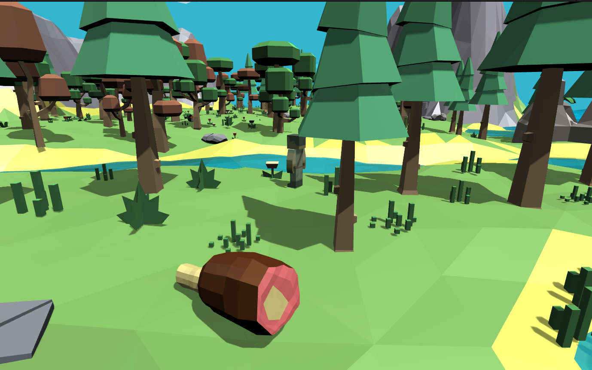
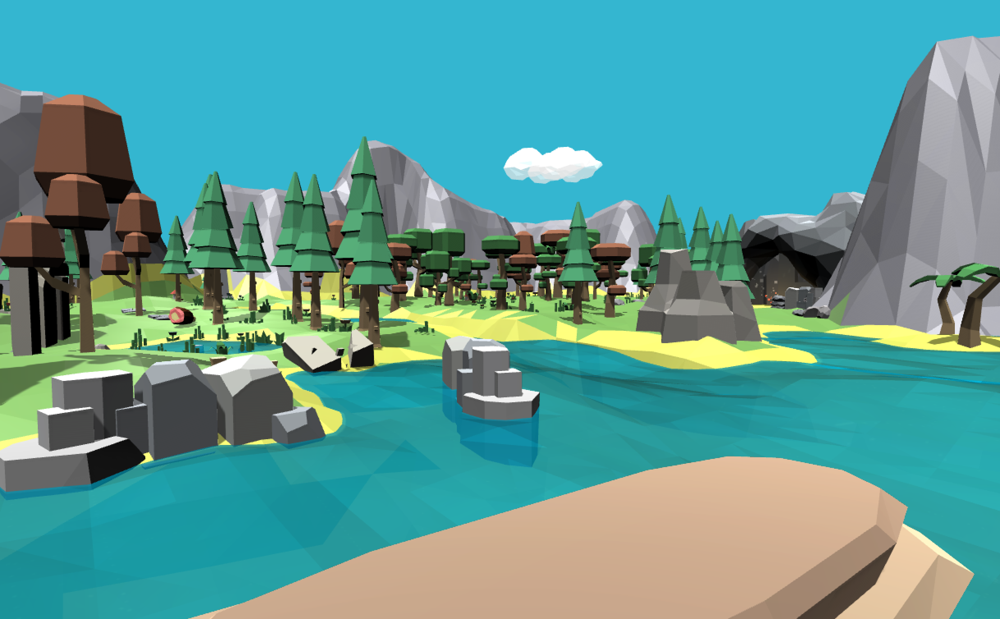
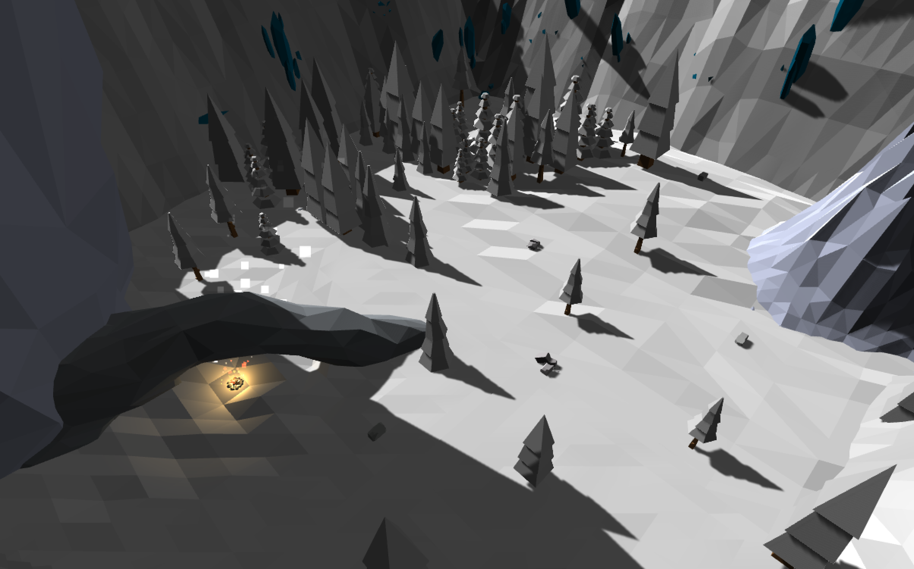

Totally Accurate Primitive Simulator
(Primal Life)
- Date: November 2016
- Type: 3D Low-poly Survival Game
- Role: Game designer, level designer, animator, programmer
- Download
This is the group project for COMP4122 Game Design and Development class at HK PolyU. We finally changed the name to "Totally Accurate Primitive Simulator" after further discussion.
In this game, we want to simulate the life in the primal age. The main character is an adult male, who is responsible for providing food for a whole family. He needs to go to different areas and hunt different animals, and bring enough food back to the cave where his family live so no one starves. So we can say this game focuses on hunting, collecting, and feeding. We want to create an emotional experience about care and concern. Wherever the player goes, he should always bear in mind that he should get food for his family.
We built four scenes: the cave, the deep forest, the snowfield, and the desert. There will be different animals living in different areas, and the player need to hunt them one by one to get enough food.
In the development process, what I learned the most is on teamwork. Although I am comfortable with general teamwork, making games is different and brings more challenges on project management. We spent a lot of figuring out how to control the versions with Github when using Unity3D for development. We also spent a lot of time on work distribution and integration. In the design stage, we made several designs that seemed fun but were almost impossible to implement during the project’s time frame. So I get a better sense of scoping during game design and managing the whole process of game development.